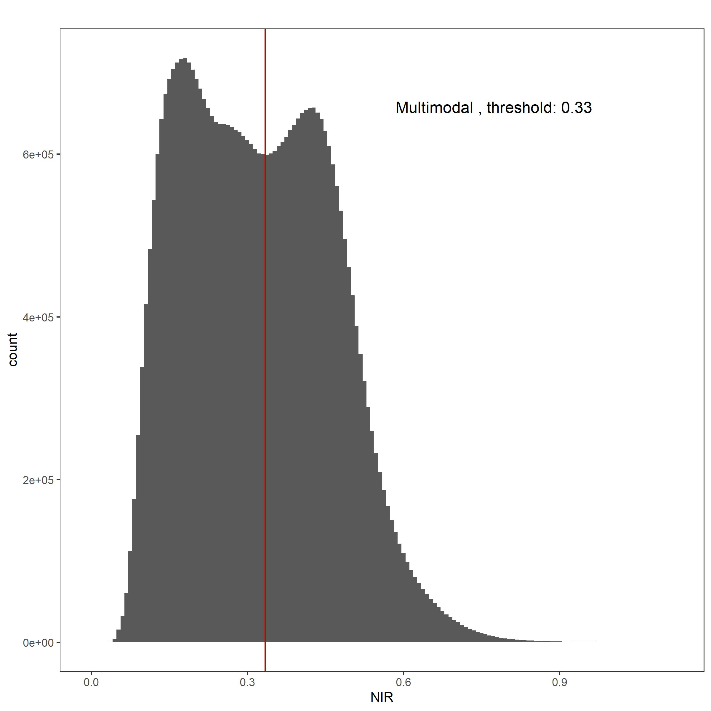
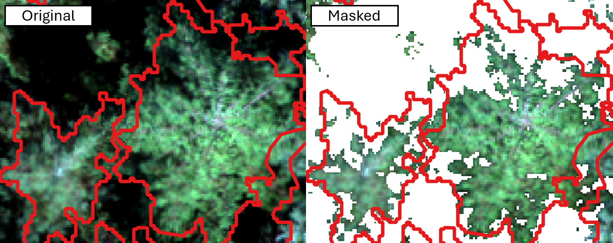
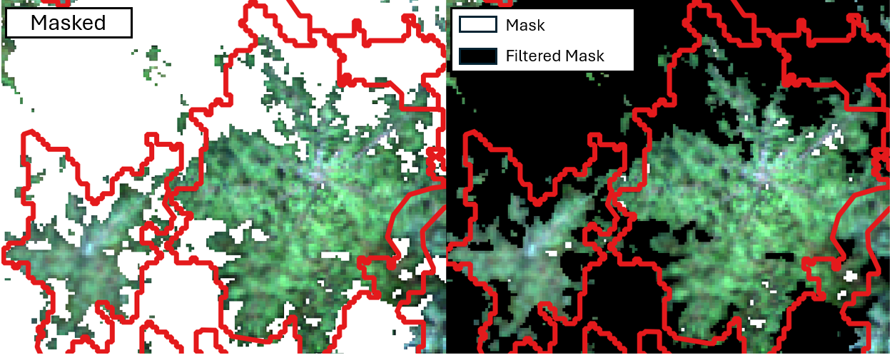

Chapter 10 Shadow Masks
Pixels containing shadows and openings in the canopy can introduce error in vegetation indices as reflectance values are often lower in shaded pixels (Malenovský et al., 2013; Zhang et al., 2024). Masking out shaded pixels and openings within the crown is necessary to calculate accurate vegetation indices. We found masking with NIR reflectance to be a consistent and effective approach for masking out shadows and gaps. We use the NIR reflectance band (842nm) from the Micasense RedEgde-MX Dual. NIR thresholds are determined using the shape of the NIR distribution. If the NIR distribution is bimodal, the threshold is set to the local minimum, whereas if the distribution is unimodal, the threshold is set to the local maximum (Chen et al., 2007; D’Odorico et al., 2021; Otsu et al., 2019).
Below we define a function find_local_min that takes a list of first derivatives and returns a dataframe containing:
neg_value: The value of the first derivative directly before the minimum (i.e. the negative derivative value to the left of the minimum)
pos_value: The value of the first derivative directly after the minimum (i.e. the positive derivative value to the right of the minimum)
pos_def: The summation of the positive gradient values (a.k.a. slope values) in the first 15 gradient values following the local minimum. This value provides an idea of how great the increase in slope is after the local minimum.
neg_def: The summation of the negative gradient values in the first 15 gradient values preceding the local minimum. This value provides an idea of how great the decrease in slope is before the local minimum.
Index: Index position of the negative gradient value bordering the local minimum. This is the index of our threshold value since we do not get a true zero slope value at the local minimum but rather a change from a very small negative gradient value to a very small positive gradient value.
definition: The summation of the absolute value of pos_def and neg_def values. The greater this number, the more defined the minimum. The above parameters were added to describe each minimum found by the function so that the true local minimum could be filtered for.
This function will be used in the next few steps to isolate minimums in the NIR distribution.
Click to show the code
# This function finds local minimums and ranks how defined they are by the 'definition' attribute
find_local_min <- function(values) { #input "values" is a list of 1st derivatives of NIR values
#initializing variables
neg_slope <- numeric()
pos_slope <- numeric()
index_of_closest <- numeric()
definition = numeric()
neg_sum = numeric()
pos_sum = numeric()
k <- 1 #initializing iterator
for (i in 2:length(values)) { #skip index 1 so following "values[i-1]..." can properly index
#print(i)
if (values[i - 1] < 0 & values[i] >= 0 & i > 15) {
#finds a change from negative to positive 1st derivative (local min)
#i>15 because local min will not be in first 15 values and this stops an error occurring where a local min is found in the first 15 values and the def_positive indexing does not work
def_positive <- c(values[i:(i+15)]) # vector of next 15 gradient values
def_pos <- def_positive[def_positive > 0] #only taking positive 1st derivative values (aka positive slopes)
pos_sum[k] <- sum(def_pos) #adding up the positive 1st derivative values
def_negative <- c(values[(i - 15):i]) # vector of the 15 values to the left of the local min (negative 1st derivatives)
def_neg <- def_negative[def_negative < 0] #only taking the negative slopes in the list
neg_sum[k] <- sum(def_neg) #adding up negative values
neg_slope[k] <- values[i - 1] #1st derivative value at i-1 (right before sign change from neg to pos)
pos_slope[k] <- values[i] #1st derivative at i (at the switch from neg to positive)
index_of_closest[k] <- i - 1 #index value of the last neg 1st derivative before the local min
definition[k] <- sum(abs(def_neg), abs(def_pos)) # higher the value, more pronounced the local min
k <- k + 1
}
}
return(data.frame(neg_value = neg_slope, pos_value = pos_slope, Index = index_of_closest, definition = definition, neg_def = neg_sum, pos_def = pos_sum))
}To begin, we load the necessary packages, the multispectral orthomosaic that contains the NIR (842nm) band, and the delineated crowns shapefile and create the folder where the shadow mask will be saved to:
Click to show the code
#Required Packages
library(ggplot2) # to plot
library(terra) # to work with the orthomosaics (rasters)
library(dplyr) #for data manipulation
library(tidyverse) # for data manipulation
library(sf) # to work with the delineated crown polygons
library(pracma) # for gradient/ derivative function
library(LaplacesDemon) # is.multimodal function
# Setting directory
dir = "Change to match your folder strucutre" #directory where shadow mask folder will be made. This dir is also used in path names for the orhtomosaics. Change up paths throughout the code to call your data.
# Reading in the multispectral orthomosaic
ms_temp = rast(list.files(paste0(dir, "metashape\\3_MS_ORTHO\\"), pattern = ".*MS_Calibrated.*_bestPanel.tif$", full.names = TRUE)) # here we read in the ortho that is in the set directory and contains "MS_Calibrated" in the name and end in "_bestPanel.tif". We had multiple orthos in this folder, so did this to ensure the proper one was called. Change to match your ortho name, or remove the pattern if you only have one ortho in the defined path.
# Reading in the shapefile containing delineated crowns and buffering inward by 5cm to limit any mixed pixels from neighboring vegetation
dir_crowns <- "D:\\Sync\\Fdc_PR_Canoe\\Crowns.shp" #path to crowns shapefile
pols_spat = st_read(paste0(dir_crowns)) %>% # reading in crown shp
filter(!st_is_empty(.)) %>% #removing empty
st_buffer(dist = -.05) %>% #buffering inward by 5cm
vect()
# Creating a folder for shadow masks
Nir_shadow_folder_baseName <- "NIR_shadow_mask_localMinOrMax" #name of the folder shadow masks will be written to. We have the folder name defined outside the folder creation step below so that we could change the folder name once without having to change it throughout the code.
if (!dir.exists(paste0(dir, Nir_shadow_folder_baseName,"\\"))) {
dir.create(paste0(dir,Nir_shadow_folder_baseName,"\\"))
}Next, the NIR band is selected from the multispectral orthomosaic. Here you can choose to:
Crop the mulispectral othomosaic to the extent of the crowns shapefile. We have found this to be a good option for mature sites with minimal exposed ground.
Mask the mulispectral othomosaic to the individual crowns. We have found this to be a good option for younger sites with lots of ground exposure.
Below we crop the raster to the extent of the polygons and reformat from a raster to a vector of values:
Click to show the code
Click to show the code
At this point the threshold can be estimated manually from the graph however, this is not a feasible method when you have many data acquisitions, nor is it the most accurate method. Below we describe the method we used to create shadow masks for many acquisitions withouth having to visually inspect the NIR distributions. To computationally find the threshold we first need to decipher whether the NIR distribution is unimodal (one peak) or multimodal (more than one peak). To do so we use the is.multimodal function from the LaplacesDemon package.
If the distribution was multimodal, we found the local minimum by:
calculating the first derivatives fo the NIR density values and storing the derivatives in dy_dt
applying the find_local_min function to the list of first derivatives to find minimums
filtering out small minimums that are not true minimums but rather dips on a larger slope
Identifying false multimodals and assigning the threshold value to be the local maximum
Identifying the largest minimum (a.k.a. the local minimum) and setting that as the threshold value
If the distribution was not multimodal (and therefore unimodal), we found the local maximum by:
- locating the NIR value that corresponds to the greatest density of values in the NIR distribution
Note: for each method there are mode and thresh_name variables defined. These variables are used to annotate the histrogram made in the next step
Click to show the code
if(is.multimodal(NIR_na)){ # if the NIR distribution is multimodal, continue to the below steps
dy_dt <- pracma::gradient(density_values$y) #list of first derivatives of NIR vector
zeros <- find_local_min(dy_dt) # Finds index locations where slope switches from neg to post (local min) and ranks the intensity of each local min
zeros_filtered <- zeros[(zeros$pos_def > 0),] # Filters rows with pos_def > 0, filtering out small minimums on negative slopes (not true local mins)
if(nrow(zeros_filtered)==0){#if empty, then detected a false multimodal distribution and defaulting to max as threshold value
print("It is a false multimodal")
max_density = max(density_values$y, na.rm = TRUE)
threshold = density_values$x[which(density_values$y == max_density)]
mode <- "Unimodal (False Multi)"
thresh_name <- "LocalMax"
}else{
zeros_local_min <- zeros_filtered[which.max(zeros_filtered$definition), ] #isolating the largest local min
# x_zeros <- density_values$x[zeros_local_min$Index] #selecting NIR (aka x_mid) value that corresponds to the index value of the most defined local min
threshold <- density_values$x[zeros_local_min$Index] #selecting NIR (aka x_mid) value that corresponds to the index value of the most defined local min
# Catching cases of "inf" returns:
if (threshold <= 0.7 & threshold > 0){#setting limits on the threshold to remove any thresholds from the tails of the distribution
print(threshold)
mode <- "Multimodal"
thresh_name <- "LocalMin"
}else{
print("Multimodal with org thresh > 0.7") #This output usually indicates an error in the function, make sure to look at the NIR distribution to confirm this is in fact correct or if the code needs modification for a special case
#This often indicates a false multimodal as well, and therefore the NIR value with the max frequency in the NIR distribution with be used as the threshold
max_density = max(density_values$y, na.rm = TRUE)
threshold = density_values$x[which(density_values$y == max_density)]
mode <- "Unimodal (False Multi with org thresh > 0.7)"
thresh_name <- "LocalMax"
}
}
}else{ #if the NIR vector is NOT multimodal, continue to the below steps
#Finding NIR value with the greatest frequency in the distribution - this max value will be the threshold for unimodal distributions
max_density = max(density_values$y, na.rm = TRUE)
threshold = density_values$x[which(density_values$y == max_density)]
print(threshold)
thresh_name <- "LocalMax"
mode <- "Unimodal"
}Next, we plot a histogram of the NIR values and annotate it to contain:
a vertical line at the threshold
the threshold value
the mode (i.e. unimodal verse mulitmodal)
Click to show the code
(hist = NIR %>% #plotting a histogram of NIR values with a vertical red line for the defined threshold value
as_tibble() %>%
ggplot() +
geom_histogram(aes(x = NIR), bins = 150) +
geom_vline(xintercept = threshold, color = "red3") +
labs(title = paste0(mode, " , threshold: ",round(threshold, digits = 2)))+
theme_bw()+
theme(panel.grid.major = element_blank(),
panel.grid.minor = element_blank(),
plot.title = element_text(size = 13,hjust = 0.75, vjust = -28)))
ggsave(hist, #saving out the plot
filename = paste0(dir, Nir_shadow_folder_baseName,"\\", date_list[x], "_NIR_shadow_hist_localMin_orMax.jpeg"),
device = jpeg,
width = 8,
height = 8)
We then isolate the NIR band from the multispectral orthomosaic and filter the raster to set pixels with NIR values greater than the threshold to NA and those that are less than or equal to the threshold to 1.
Click to show the code
shadow_mask = ms_temp[[10]] #isolating the NIR band of the multispectral ortho
shadow_mask[shadow_mask > threshold] = NA #for NIR values > threshold, make them NA
shadow_mask[shadow_mask <= threshold] = 1 #for NIR values < or = to the threshold value, make them 1
# Writing out the shadow mask that has values of 1 for all pixels that will be masked out
terra::writeRaster(shadow_mask, paste0(dir, Nir_shadow_folder_baseName,"\\", date_list[x], "_NIR_shadow_thresh",threshold ,"_",thresh_name, ".tif"),
overwrite = TRUE)
Lastly, we apply the clump function to group adjacent pixels that represent shadows creating “clumps” a.k.a. shadow patches. These shadow patches are then converted into a dataframe containing a unique ID per shadow patch and the number of pixels within each patch.Click to show the code
# Grouping adjacent pixels with the same value (i.e. representing shadowed areas) into distinct patches or clumps
shadow_patches = raster::clump(raster::raster(shadow_mask), directions = 4) %>%
rast()
# Summarizing the clumps obtained from the shadow patches raster. It contains two columns:
#1. value: representing the unique ID of each clump:
#2. count: representing the number of pixels within each clump
clumps = data.frame(freq(shadow_patches))Here we filter the shadow patches by a threshold to remove insignificant patches and write out the cleaned shadow mask for future use.
The threshold num_pix is calculated by:
setting an initial area threshold of 0.02m^2 (200cm^2)
dividing the 0.02m^2 threshold by the area of a pixel to determine the threshold number of pixels a shadow patch must have to not be filtered out
In our case, the resolution of the raster was just over ~3cm, giving us a threshold of ~23 pixels.
Click to show the code
# Calculating the threshold for the number of pixels that a clump must contain to be considered significant
# It is calculated based on the desired area threshold (200 cm²) divided by the area of a single pixel
num_pix = 0.02 / (res(shadow_patches)[1]^2) #0.02 represents 200cm² in meters
flecks = clumps[clumps$count > num_pix,] # remove clump observations with frequency smaller than the threshold
flecks = as.vector(flecks$value) # record IDs from clumps which met the criteria in previous step
new_mask = shadow_patches %in% flecks #keep clumps that have IDS in flecks
new_mask[new_mask == 0] = NA # make clumps that are zero, NA
#writing out a 'cleaned' shadow mask
terra::writeRaster(new_mask, paste0(dir, Nir_shadow_folder_baseName,"\\", date_list[x], "_NIR_shadow_thresh",threshold ,"_",thresh_name, "_mask2.tif"),
overwrite = TRUE)Below you can see that in this case the filter did not result in a large change in the shadow mask as there were minimal small patches to begin with. Here the white areas in the filtered mask image on the right are areas that will not be masked given that the mask did not contain enough pixels. This will result in a less patchy shadow mask.

References:
Chen, Y., Wen, D., Jing, L., Shi, P., 2007. Shadow information recovery in urban areas from very high resolution satellite imagery. Int J Remote Sens 28. https://doi.org/10.1080/01431160600954621
D’Odorico, P., Schönbeck, L., Vitali, V., Meusburger, K., Schaub, M., Ginzler, C., Zweifel, R., Velasco, V.M.E., Gisler, J., Gessler, A., Ensminger, I., 2021. Drone-based physiological index reveals long-term acclimation and drought stress responses in trees. Plant Cell Environ 44. https://doi.org/10.1111/pce.14177
Malenovský, Z., Homolová, L., Zurita-Milla, R., Lukeš, P., Kaplan, V., Hanuš, J., Gastellu-Etchegorry, J.P., Schaepman, M.E., 2013. Retrieval of spruce leaf chlorophyll content from airborne image data using continuum removal and radiative transfer. Remote Sens Environ 131, 85–102. https://doi.org/10.1016/J.RSE.2012.12.015
Otsu, K., Pla, M., Duane, A., Cardil, A., Brotons, L., 2019. Estimating the threshold of detection on tree crown defoliation using vegetation indices from uas multispectral imagery. Drones 3. https://doi.org/10.3390/drones3040080
Zhang, C., Chen, Z., Yang, G., Xu, B., Feng, H., Chen, R., Qi, N., Zhang, W., Zhao, D., Cheng, J., Yang, H., 2024. Removal of canopy shadows improved retrieval accuracy of individual apple tree crowns LAI and chlorophyll content using UAV multispectral imagery and PROSAIL model. Comput Electron Agric 221, 108959. https://doi.org/10.1016/J.COMPAG.2024.108959